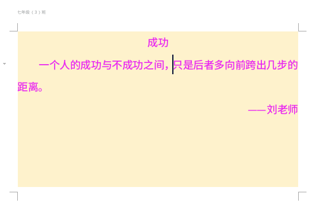

第6课 学会插入图片
1、设置页面16开、横向、背景色，字体、字号、颜色；
2、设置标题居中，首行缩进，行距1.5倍；
3、点面板“插入 - 页眉和页脚 ”，上面写自己的班级，页脚插入页码，
在页面中间双击，返回文字编辑；

4、将光标放在中间逗号的后面，在插入面板里，点插入“图片-来自文件..”；
5、点图片右边的小马，选第一个“四周型环绕”，再点一下小马关闭；
10、拖动图片四个角的控制点小方块，缩小图片，移动图片到合适的位置；
11、保存文件，文件名前面加上06，保存到自己的文件夹；
本节学习了的基础知识，如果你成功地完成了练习，请继续学习下一课内容；
返回目录 下一课
本教程由TeliuTe制作|著作权所有
基础教程网：http://teliute.org/
美丽的校园……
转载和引用本站内容，请保留作者和本站链接。